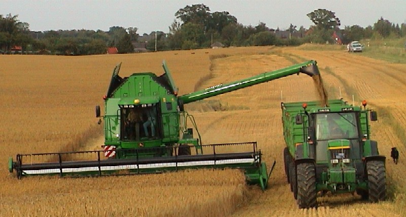

Звуки трактора
Сельское хозяйство — отрасль экономики, направленная на обеспечение населения продовольствием (пищей, едой) и получение сырья для ряда отраслей промышленности. Отрасль является одной из важнейших, представленной практически во всех странах мира. В мировом сельском хозяйстве занято около 1 млрд экономически активного населения (ЭАН).
От состояния отрасли зависит продовольственная безопасность государства. С проблемами сельского хозяйства прямо или косвенно связаны такие науки, как агрономия, животноводство, мелиорация, растениеводство, лесоводство и др.
Возникновение сельского хозяйства связано с так называемой «неолитической революцией» в средствах производства, начавшейся около 12 тысяч лет назад и приведшей к возникновению производящего хозяйства и последующему развитию цивилизации.
Лидирующими странами по производству и потреблению продукции сельского хозяйства являются Соединённые Штаты Америки и члены Евросоюза.